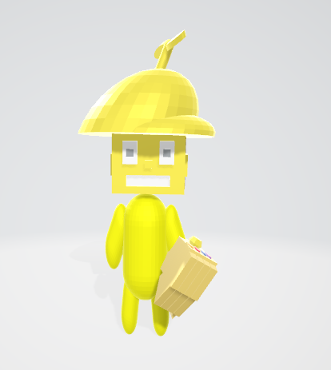

Hobbies
sobre mim
Eu sou um jovem de 15 anos, estudo a programação a quase um ano e criei este site para compartilhar meus códigos. quem me ensinou a maioria das coisas foi minha professora leidiane, que dá aula nas byjus.
Hobbies
Eu gosto muito de jogar no meu computador, mas ultimamente estou mais focando nos estudos e nos esportes, participando de interclasses e jogando todo dia no meu condomínio. Gosto também de sair com meus amigos, comprar roupas e comprar coisas dos meus jogos.
Meus códigos
Jogo do T-rex
Esse jogo é uma réplica do jogo do dinossauro quando você está sem internet, o link desse jogo estará abaixo para quem quiser jogar!
TREX